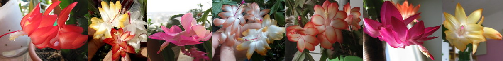

Schlumbergera - это красиво цветущее, эпифитное растение. Представляет собой небольшой куст высотой 20-30 см, состоящий из видоизмененных побегов (филлокладий). Филлокладии шлюмбергеры имеют зубчатые или фестончатые края (в зависимости от вида или гибрида) Длина их составляет от 1,5 до 5 см.
На терминальных (концевых) филлокладиях к ноябрю месяцу развиваются зигоморфные (двусторонне симметричные) цветы различных расцветок: красные, пурпурные, желтые, белые и т.д., цветы могут быть двух и трех цветные.
Вообще, существует некоторая путаница в названиях и таксономическом определении вида данных растений. В настоящее время данные растения относятся к роду «Шлюмбергера», но в старой литературе встречаются такие названия как Зигокактус (Zygocactus), Эпифиллюм (Epiphyllum), Цереус (Cereus).
К роду Schlumbergera относятся так же: Schlumbergera russelliana Schlumbergera truncata Schlumbergera orssichiana Schlumbergera kautskyi Schlumbergera opuntioides Schlumbergera microsphaerica (S. obtusangula)
Растение, которое в России традиционно называется «Декабрист» является межвидовым гибридом Schlumbergera truncata и Schlumbergera russelliana. Этот гибрид был получен в 1860 году в Англии, его латинское название Schlumbergera x buckleyi; “x” указывает, что это - межвидовой гибрид. На форумах Шлюмбергеру Бакли часто называют «Бабушкин» декабрист, в отличие от шлюмбергеры трунката, которую называют «Голландский» декабрист. Очевидно, что именно к этому гибриду применимо и название “Варварина коса” из за характерных фестончатых краев филлокладий.
Природный ареал обитания шлбюмбергеры – влажные горные районы восточной Бразилии, немного севернее Рио-де-Жанейро. Температура в данном регионе в течении года колеблется от 15 до 22 С.
Количество осадков - от 431.8 мм/мес. в сезон дождей до 76,2 мм/мес. в сухой сезон. (Для сравнения: в Хабаровске наибольшее количество осадков выпадает в августе, в норме – 151 мм./мес., максимум – 434 мм/мес. был в 1981 году).
Продолжительность светового дня – 11 - 13,5 часов. (опять же: в Хабаровске 8 – 16 часов).
Интенсивность солнечного излучения в местах произрастания Шлюмбергеры очень высока. По крайней мере выше, чем например в Крыму или в Хабаровске (в данных регионах интенсивность солнечного излучения максимальная для России). Schlumbergera truncata укореняется в органических остатках, накопившихся в развилках ветвей или в скальных расщелинах, расположенных в тенистых местах. Schlumbergera bridgesii растет в более высоких, а соответственно и более холодных и засушливых горных районах.
В естественных условиях (без стимуляции цветения) Шлюмбергера трунката зацветает к средине ноября, или в течении второй его половины. Schlumbergera x buckleyi - на 4-6 недель позже.
Наиболее простой вариант размножения – вегетативное, однако возможно и семенное. Для вегетативного размножения 2-3 созревших сегмента откручиваются от взрослого растения и помещаются в почвенный субстрат. До начала образования корней, которое происходит после 2-3х недель, необходимо избегать избыточного увлажнения. Наилучшие результаты достигаются при укоренении черенков в условиях высокой влажности (например, в мини-тепличке) и при опрыскивании 1-2 раза в неделю. Нередко при укоренении в мини-тепличке у шлюмбергеры развиваются воздушные корни, которые способствуют более быстрой приживаемости растений. Основные ошибки при вегетативном размножении шлюмбергеры: · Черенки срезаются, а не откручиваются со взрослого растения; · Укоренение в воде (высокий риск загнивания черенков); · Слишком сильное заглубление черенков. Семенное размножение шлюмбергеры – значительно более долгий процесс. Сортовые признаки, такие как оттенок цветов, при семенном размножении не сохраняются. Для того чтобы получить плоды необходимо кисточкой переопылить два генетически различных растения. Шлюмбергера бакли успешно опыляется пыльцой Шлюмбергеры трунката, но редко переопыляются с другой Шлюмбергерой бакли, так как считается, что все растения, которые сейчас встречаются в культуре, генетически идентичны гибриду, полученному в 1860 году. Плод шлюмбергеры может оставаться на кусте до двух лет – до тех пор пока семена не начнут прорастать прямо в ягоде. Однако уже через полгода после опыления семена успешно всходят. То есть, опылив растения в ноябре – декабре, вы можете в июне их уже посеять. Всходят семена в течение 1-3 недель. В течение года после посева (по моему опыту) растения наращивают 2-3 настоящих сегмента. Цветение сеянцев наступает через 2-2,5 года после посева.
Наиболее эффективныйв моей практике способ укоренения:
откручиваем два зрелых филлокладия=сегмента (можно и один) можно их вымыть дегтярным мылом на всякий случай кладем сушиться на неделю делаем субстрат: 50% вермикулит, 50 % песок затем насыпаем субстрат либо в маленькие емкости, либо на дно разрезанной напополам 6-ти - 10-ти литровой банки от воды. Субстарт, при желании, можно пролить горячим раствором марганцовки (для стерилизации). Но в песке с вермикулитом никакая гниль и так не живет) Делаем ложкой углубления в субстрате, засовываем в филлокладии в углубления до половины маленькие емкости засовываем в банку от воды (нижнюю часть) Разводим эпин, циркон, крезацин - какой-нибудь стимулятор роста. Опрыскиваем все это дело и закрываем либо верхней частью банки, либо полиэтиленом. В течении полутора месяцев НЕ ПОЛИВАЕМ!!!! ТОЛЬКО ОПРЫСКИВАЕМ!!! Время от времени проветриваем! Радуемся когда начинают появляться воздушные корни (если сегментов больше одного) Еще больше радуемся когда начинают расти новые почки. Важно:
Субстрат не должен быть слишком влажным! Эффективность укоренения в тепличке возрастает в разы! Если у вас единственный сегмент какого-то редкого сорта - укоренять лучше в тепличке. Чем больше объем теплички, тем лучше в ней микроклимат - обрезанные банки от воды или коробки от тортов - оптимальный вариант. Но гигантоманией страдать тоже не надо. через пару недель целесообразно опрыскать удобрением, разведенным как для подкормки “по листу”